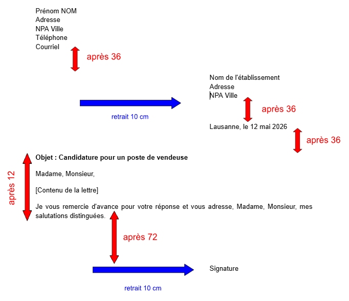

Expéditeur
Destinataire
Lieu et date
Objet conseillé
Modèle de lettre

Travail à faire dans Google Docs
- Ouvrir Google Docs.
- Créer un nouveau document vierge.
- Nommer le fichier avec le nom indiqué ci-dessous.
- Rédiger la lettre complète en respectant les informations données.
- Présenter correctement la lettre : expéditeur, destinataire, lieu et date, objet, texte, signature.
Nom du fichier :
Lettre marquée comme faite.